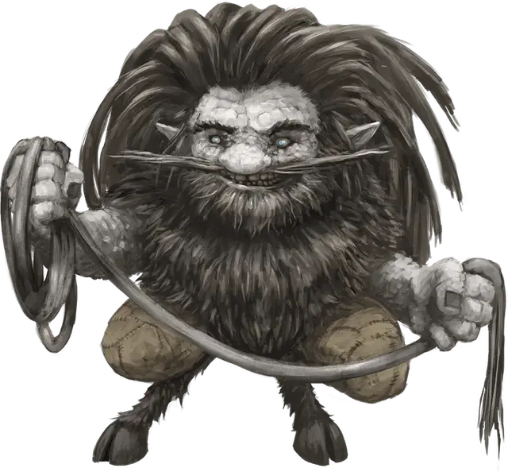

Корред
Korred
Маленькая Фея, обычно хаотично-нейтральная

Класс Доспеха 17 (природный доспех)
Хиты 93 (11к6 + 55)
Скорость 30 футов, копая 30 футов
| мод | спас | ||
|---|---|---|---|
| СИЛ | 23 | +6 | +6 |
| ЛОВ | 14 | +2 | +2 |
| ТЕЛ | 20 | +5 | +5 |
| мод | спас | ||
|---|---|---|---|
| ИНТ | 10 | +0 | +0 |
| МДР | 15 | +2 | +2 |
| ХАР | 9 | −1 | −1 |
Навыки Атлетика +9, Восприятие +5, Скрытность +5
Сопротивление урону дробящий, колющий, рубящий от немагических атак
Чувства тёмное зрение 120 футов, пассивное Восприятие 15, чувство вибрации 120 футов
Языки Гномий, Дварфийский, Подземный, Сильван, Терран
Опасность 7 (2900 опыта)
Бонус мастерства +3
Среда обитания Лес
Особенности
Каменный камуфляж. Корред обладает преимуществом на проверки Ловкости (Скрытность) при попытках спрятаться на каменистой местности.
Действия
Мультиатака. Корред совершает две атаки Палицей или Камнем.
Палица. . Рукопашная атака оружием: +9 к попаданию, досягаемость 5 футов, одна цель. Попадание: 10 (1к8 + 6) дробящего урона или 19 (3к8 + 6) дробящего урона, если корред находится на земле.
Камень. . Дальнобойная атака оружием: +9 к попаданию, дистанция 60/120 футов, одна цель. Попадание: 15 (2к8 + 6) дробящего урона или 19 (3к8 + 6) дробящего урона, если корред находится на земле.
Использование заклинаний. Корред накладывает одно из следующих заклинаний, используя Мудрость в качестве базовой характеристики и без использования материальных компонентов (Сл спасброска от заклинаний 13):
• Неограниченно: общение с природой [commune with nature] (действием), слияние с камнем [meld into stone], изменение формы камня [stone shape];
• 1/день каждое: неудержимая пляска Отто [Otto’s irresistible dance].
Бонусные действия
Приказ волосам. У корреда есть по крайней мере одна 50–футовая веревка, сплетенная из его волос. Корред приказывает одной такой веревке, находящейся на расстоянии до 30 футов от него, переместиться на 20 футов и опутать существо Большого размера или меньше, которое корред может видеть. Цель должна преуспеть в спасброске Ловкости Сл 13 или будет схваченной веревкой (Сл высвобождения 13). Пока захват не закончится, существо считается опутанным. Корред может использовать бонусное действие для того, чтобы освободить цель, которая также освободится если корред умрет или станет недееспособным.
У веревки из волос корреда КД 20 и 20 хитов. Она восстанавливает 1 хит в начале каждого хода корреда, пока у неё остается хотя бы 1 хит и пока корред жив. Если хиты веревки снижаются до 0, она уничтожается.
Описание
Корреды – непредсказуемые скрытные феи с сильной связью с землей и камнем. Из–за своих магических волос и мистического понимания минералов они часто становятся объектом охоты искателей сокровищ, дварфов и прочих личностей, желающих заполучить богатства глубин.
Корреды предпочитают водиться с себе подобными и иногда общаются с существами элементальной земли, такими, как галеб дары. Племя корредов еженедельно встречается, чтобы поучаствовать в церемониальных танцах, отбивая ритмы в камне своими дубинками и копытами. В глубинах Материального Плана корреды обычно спасаются бегством от других существ, но становятся агрессивными, если их оскорбить или надоедать им звуками добычи полезных ископаемых.
Корреды могут швырять валуны гораздо большего размера, чем, казалось бы, должны мочь, вылепливать камни, как будто это глина, плыть сквозь камень и вызывать земляных элементалей и других существ. Также они получают сверхъестественную силу просто стоя на земле.
Зачарованные волосы
У корредов волосы по всему телу, но только растущие на голове волосы – магические. Если их отстричь, то они превращаются в тот материал, которым их отстригли. Корреды отстригают пряди своих волос железными ножницами, а затем свивают пряди вместе в железные веревки, которыми они манипулируют, оживляя их, чтобы те извивались, как змеи, вокруг существ и предметов. Корреды очень гордятся своими волосами, и очень оскорбляются, когда кто–то пытается обстричь их без разрешения.